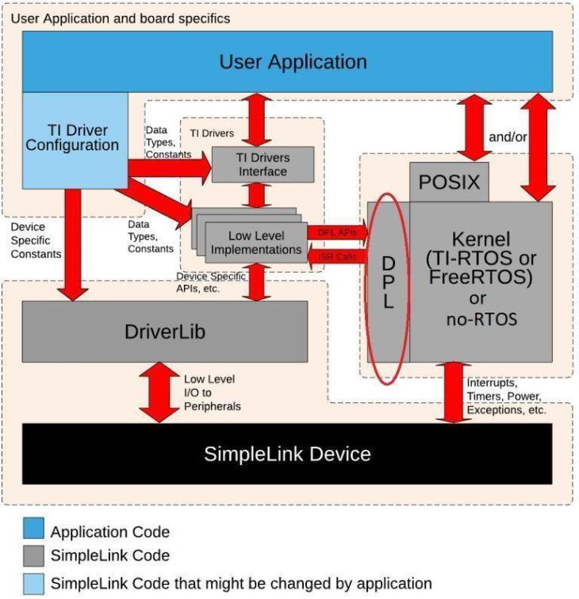
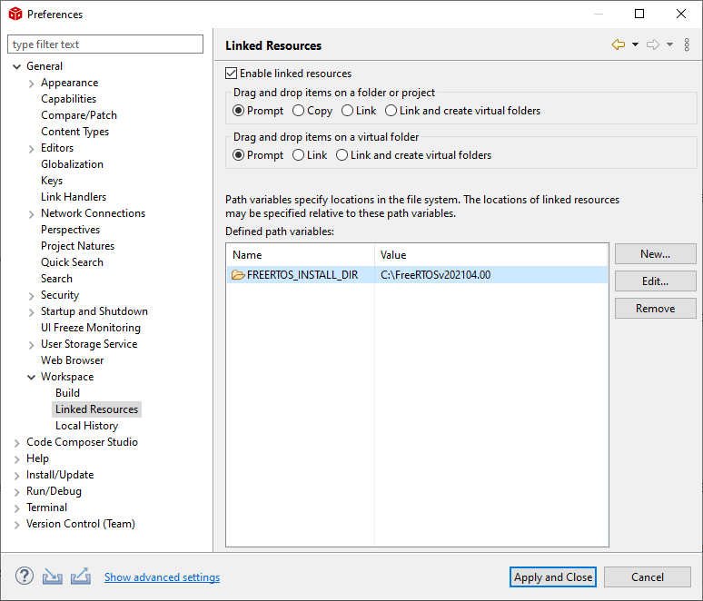

Kernel Configuration¶
The FreeRTOS kernel is configured by FreeRTOSConfig.h file which can be found
in {SDK_INSTALL_DIR}\kernel\freertos\builds\{DEVICE}\release\pregenerated_configuration,
you can change the configuration file so that the kernel will be tailored to your application.
For more information about kernel configuration, please see FreeRTOS Kernel Configuration Overview.
In the SimpleLink CC13xx/CC26xx SDK, all FreeRTOS application routines are abstracted using the following:
A POSIX layer, which was designed for use with this SimpleLink CC13xx/CC26xx SDK
A Driver Porting Layer (DPL) for use by the TI Drivers
You can find example FreeRTOS projects that use the SimpleLink CC13xx/CC26xx SDK in the examples/rtos/
folder for all supported IDEs.
No native FreeRTOS examples are provided in this SimpleLink CC13xx/CC26xx SDK. If you want to use the native FreeRTOS routines without the abstractions provided by the SimpleLink CC13xx/CC26xx SDK, documentation is provided on the FreeRTOS website.
POSIX Support¶
Portable Operating System Interface (POSIX) is an IEEE industry API standard for OS compatibility. The SimpleLink CC13xx/CC26xx SDK provides support for POSIX APIs on top of FreeRTOS (as it does for TI-RTOS7). For a more detailed description of the POSIX support in the SimpleLink CC13xx/CC26xx SDK, please refer to the POSIX Overview Workshop
Driver Porting Layer (DPL)¶
The TI Drivers (e.g. UART2, I2C, Power Management, etc.) are written to be used with the Driver Porting Layer (DPL). The SimpleLink CC13xx/CC26xx SDK includes a DPL implementation for both FreeRTOS, TI-RTOS7 and no RTOS.

Using FreeRTOS with CCS¶
In order to use FreeRTOS within CCS, you must specify the location of the FreeRTOS installation. To do this, follow these steps:
In CCS, choose Window → Preferences from the menus.
Select the General → Workspace → Linked Resource category.
Click New and add a link with the following settings.
Name:
FREERTOS_INSTALL_DIRValue: The location of your FreeRTOS installation

These steps only need to be performed once per CCS workspace that you create.
Using FreeRTOS with IAR¶
The Quick Start guide has step-by-step instructions for building SDK Projects with IAR. Once these steps are followed, the user still needs to give IAR the location of the FREERTOS_INSTALL_DIR in the Custom Argvars:
Open Tools -> Configure Custom Argument Variables
Open the Global SDK paths.
Configure the FREERTOS_INSTALL_DIR variable to match your install directory.

FreeRTOS vs. TI-RTOS7 modules¶
The application and the ICall layer communicate using events to call the OS and made context switch. The table below shows the modules that are used by TI-RTOS7 in a typical example flow, at the same time explains which modules are used by FreeRTOS.
Example flow |
TI-RTOS7 modules |
FreeRTOS modules |
1. Application Thread Listen (pend) on event number |
TI-RTOS7 Semaphore/Event |
SemaphoreP (used through DPL layer) and mq_send / mq_receive Blocking Mqueue (POSIX queues) |
2. Stack Thread Doing whatever he asked to do by the app called |
TI-RTOS7 Timers |
TimersP (used through DPL layer) |
3. Stack Thread Push a message (or number of messages) into the queue and post an event Queue |
TI-RTOS7 utility Queue |
mq_send / mq_receive NON-Blocking Mqueue (POSIX queues) |
4. Application Thread OS wakes the application thread and the application pulls the message from the Non-OS queue |
TI-RTOS7 utility Queue |
mq_send / mq_receive NON-Blocking Mqueue (POSIX queues) |
5. Application Thread Listen (pend) on event number - cycle has completed |
TI-RTOS7 event |
mq_send / mq_receive Blocking Mqueue (POSIX queues) |